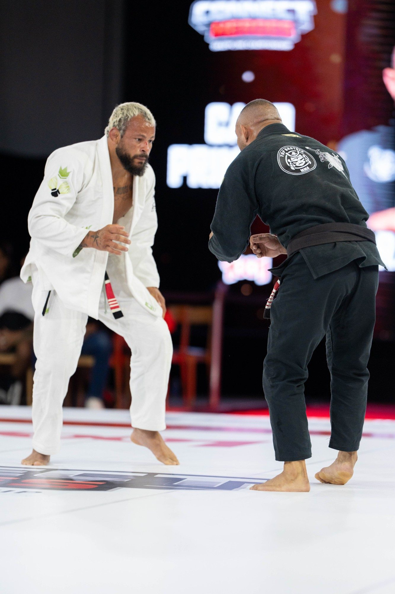
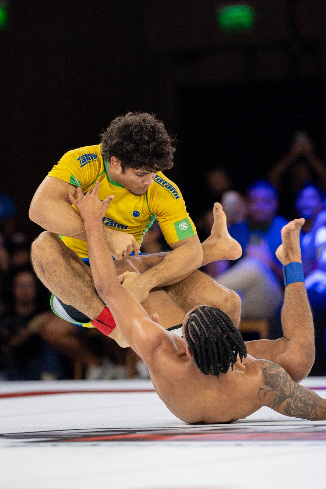
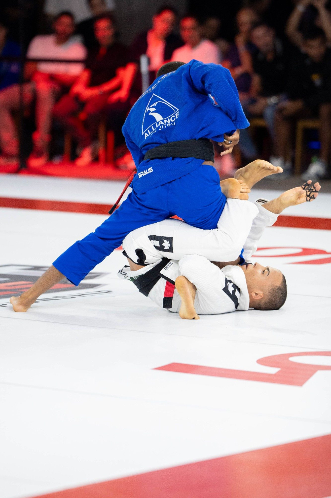

O jiu-jítsu brasileiro é uma economia de bilhões com presença mínima em televisão aberta. São milhões de praticantes que treinam, compram kimono e pagam mensalidade todo mês, e quase nenhuma ocasião em que a modalidade aparece produzida como espetáculo — com narrativa, hospitalidade e padrão de imagem à altura de uma marca grande ao lado.
Connect Heroes.
Competição de grappling desenhada como produto de entretenimento: combates selecionados, fight week em hotel cinco estrelas e distribuição simultânea em TV, streaming e redes.

O INÍCIO DE UMA
JORNADA.
Evento global com início no Rio de Janeiro. O Connect Heroes nasceu para ser global: a primeira edição aconteceu no Brasil, e o desenho do projeto aponta para Estados Unidos, Emirados Árabes Unidos, Japão, Austrália e Europa.
O Connect Heroes nasceu no Rio de Janeiro para ocupar um espaço vago no jiu-jítsu brasileiro: o de propriedade esportiva produzida como espetáculo. A técnica segue no centro, mas a competição passa a vir acompanhada de narrativa, hospitalidade e padrão de imagem compatível com marcas grandes. A primeira edição foi realizada no Grand Hyatt Rio de Janeiro, com fight week dentro do próprio hotel e distribuição simultânea em TV, streaming e redes. A segunda edição acontece em dezembro, em Niterói, com lançamento para a imprensa no MAC Niterói. Em volta do evento existe um plano de longo prazo, o World Connect Heroes, que organiza o esporte até 2032.
Esporte e circuitos
Campeonato de grappling e plataforma de mídia
Rio de Janeiro, RJ
2026—2032
RESUMO
EXECUTIVO.
O Connect Heroes trata o jiu-jítsu como produto de entretenimento, não como torneio: poucos combates, atletas com narrativa, rivalidades claras e uma semana inteira de conteúdo produzida dentro de um hotel cinco estrelas. É o único evento da modalidade no Brasil que reúne TV, streaming e experiência presencial premium no mesmo pacote comercial. A primeira edição foi ao ar em julho de 2026; a segunda acontece em dezembro, em Niterói, com lançamento para a imprensa no MAC Niterói.
240 milTelevisores na transmissão ao vivo pela Xsports
27Reprises entre 11 de julho e 9 de agosto
25 miVisualizações em reels ao longo de julho
3Telas ao mesmo tempo: TV, streaming e redes
TEASER
DO EVENTO.
Connect Heroes, teaser da 1ª edição
CHEGAMOS PARA TRANSFORMAR
O JIU-JÍTSU NO MUNDO.
Duas propriedades lideram o mercado e a terceira posição está em disputa aberta. O espaço pertence a quem juntar distribuição em TV e streaming com experiência presencial de alto padrão, e juntar antes que ele se feche. É o desenho do Connect Heroes, e é por isso que a primeira edição já nasceu em três telas e em hotel cinco estrelas.
O que a marca leva
Multitransmissão simultânea
A mesma noite entra ao vivo na Xsports, nos canais Combate e SporTV 3 pelo Globoplay e no canal próprio do projeto. Um sinal, três janelas de distribuição, um contrato só para a marca.
Uma noite para mudar toda uma história
O card é montado por rivalidade e revanche, não por sorteio. Cada combate carrega uma história que o público já acompanha, e é essa história que a transmissão conta — dentro e fora do tatame.
Unindo as maiores marcas do mundo
Hotel cinco estrelas, público sentado, hospitalidade e atletas hospedados no mesmo endereço. É o contexto que uma marca global reconhece como seu, e que o ginásio não entrega.
Foco em 2032
Cada edição alimenta o World Connect Heroes, o plano que organiza o esporte até os Jogos de 2032. Quem entra agora entra num calendário de longo prazo, não em um patrocínio de uma noite.
COMO UMA EDIÇÃO ACONTECE.
Uma edição não é uma noite: é uma semana de operação que começa na chegada dos atletas e segue no ar por mais um mês.
Atletas, equipe e imprensa ficam hospedados no mesmo hotel em que a competição acontece. A semana inteira em um só endereço concentra produção, bastidores e acesso da imprensa, e transforma cinco dias em material de conteúdo.
A pesagem e a coletiva de imprensa abrem a semana para fora: é quando as rivalidades ganham nome, a pauta chega às redações e o público entende quem enfrenta quem.
A competição ocupa um dia, com combates selecionados e público sentado. A mesma noite vai ao ar ao vivo na Xsports, nos canais Combate e SporTV 3 pelo Globoplay e no canal próprio do projeto.
A entrega não termina no resultado. A primeira edição foi reprisada 27 vezes entre 11 de julho e 9 de agosto, e os cortes em redes somaram 25 milhões de visualizações no mês.
O CARD DA ESTREIA.
Sem chave e sem sorteio: cada combate foi montado por rivalidade ou revanche. Os resultados abaixo são os publicados pela imprensa especializada.
| Combate | Peso | Resultado | Fonte |
|---|---|---|---|
| Fabrício Andrey x Meyram Maquiné | 70 kg · sem kimono | Fabrício Andrey venceu por decisão unânime | Portal do Vale Tudo · resultados da 1ª edição |
| Diogo Reis x Rerisson Gabriel | 64 kg | Diogo Reis venceu por decisão dividida | Portal do Vale Tudo · resultados da 1ª edição |
| Piter Frank | 85 kg | Piter Frank venceu por chave de braço | Portal do Vale Tudo · resultados da 1ª edição |
| Pedro Machado x Felipe Assis | Card principal | Combate anunciado no card divulgado antes do evento | Sportbuzz · o projeto e o card |
Sem chave
Os combates são montados por rivalidade e revanche, não por sorteio de chaveamento.
Bônus por finalização
R$ 10 mil por finalização no card principal e R$ 5 mil no preliminar, para estimular a busca pelo acabamento.
Bolsa independente do resultado
Todos os atletas recebem, vencendo ou perdendo.
Checagem de antecedentes
A produção verifica os antecedentes criminais de cada participante.
Trezentos lugares
A primeira edição foi montada para 300 convidados, não para arquibancada aberta.
Portal do Vale Tudo · prévia da estreia · Sportbuzz · o projeto e o card

MULTITRANSMISSÃO.
A mesma noite vai ao ar em quatro frentes ao mesmo tempo. Cada uma entrega uma coisa diferente para quem patrocina: alcance ao vivo em TV aberta, distribuição em canal pago, conteúdo sob demanda e repercussão em rede.
TV aberta
Xsports
240 miltelevisores na transmissão ao vivo
- Reprises em 30 dias27
- Janela11 de julho a 9 de agosto de 2026
Mídia kit oficial Connect Heroes V6 · documento da produção
TV por assinatura
Combate e SporTV 3
2 canaisno pacote do Globoplay
- Audiênciaa medir, aguardando relatório da emissora
Mídia kit oficial Connect Heroes V6 · documento da produção
YouTube
Canal próprio
149 milvisualizações no canal do projeto
- Horas de exibição63 mil
- Aparelhos conectados87 mil
- Em televisores54,9%
Redes
Reels
25 milhõesvisualizações no mês do evento
- Transmissão e reprises somadasmais de 2 milhões de visualizações
Mídia kit oficial Connect Heroes V6 · documento da produção

EDIÇÕES.
2026Connect Heroes 1ª edição 11 de julho de 2026 · Grand Hyatt Rio de Janeiro, RJ · 1 dia Explorar edição 2026Connect Heroes 2ª edição 12 de dezembro de 2026 · Niterói, RJ · 1 dia Explorar ediçãoDADOS.
O que este projeto mobiliza para acontecer. Os campos preenchidos têm origem identificada; os demais dependem de dado da produção.
5Mercados no plano
Brasil, Estados Unidos, Emirados Árabes Unidos, Japão e Europa
8Núcleos do ecossistema
Sport, Athletes, Teams & Academies, Media, Fan & Experience, Commercial, Commerce e Tech & Data
2Modalidades
Jiu-jítsu com kimono e grappling sem kimono
Xsports, Combate e SporTV 3Transmissão
Ao vivo e reprises, com distribuição pelo Globoplay
Indicadores acompanhados
Os indicadores que o projeto acompanha. A coluna de leitura traz o número declarado pela produção; o selo muda quando chegar relatório de emissora ou captura de painel.
| Indicador | Referência | Última leitura | Fonte |
|---|---|---|---|
| Televisores na transmissão ao vivo | Xsports | 240 mil | Mídia kit oficial Connect Heroes V6 · documento da produção |
| Reprises na emissora | janela de 30 dias | 27 | Mídia kit oficial Connect Heroes V6 · documento da produção |
| Visualizações no YouTube | canal próprio | 149 mil | Connect Cast no YouTube |
| Horas de exibição no YouTube | canal próprio | 63 mil | Connect Cast no YouTube |
| Aparelhos conectados no YouTube | 54,9% televisores | 87 mil | Connect Cast no YouTube |
| Visualizações em reels | mês do evento | 25 milhões | Mídia kit oficial Connect Heroes V6 · documento da produção |
| Público presente | Grand Hyatt Rio | a medir | — |
| Atletas inscritos | chave completa | a medir | — |
| Audiência nos canais Combate e SporTV 3 | relatório da emissora | a medir | — |
Arraste a tabela para o lado para ver a leitura e a fonte.
O MERCADO BJJ.
O jiu-jítsu brasileiro deixou de ser nicho de academia e virou economia. Os números abaixo descrevem o setor, não o evento.
3,7 milhõesPraticantes de jiu-jítsu no BrasilPonto médio de uma faixa de 3,2 a 4,6 milhões.
R$ 5,5 biMovimentação anual estimada do esporteFaixa de R$ 3,5 a 8 bilhões, somando mensalidades, kimonos, No-Gi e lifestyle, eventos, seminários, mídia e patrocínio.
1,55 milhãoAlunos pagantes estimadosFaixa de 1,2 a 2 milhões, concentrados entre 25 e 54 anos.
+34%Crescimento da penetração entre 2013 e 2026De 1,30% para 1,74% da população praticante.
10 a 18 milAcademias no paísCerca de 14 mil pontos no ponto médio da estimativa.
130 a 150Países com prática organizadaGracie Barra com mais de mil escolas, Checkmat com 405 filiais e Alliance em 29 países.
PARCEIROS.
Xsports
Transmissão ao vivo e reprises
Globoplay
Distribuição pelos canais Combate e SporTV 3
Grand Hyatt Rio de Janeiro
Sede da 1ª edição e da fight week
MAC Niterói
Lançamento da 2ª edição para a imprensa
Connect Cast
Canal e produção de conteúdo do projeto
WORLD CONNECT HEROES
O plano de longo prazo.
Contribuir para criar as condições esportivas, institucionais, culturais e globais para que o jiu-jítsu brasileiro alcance o movimento olímpico e se torne um dos grandes esportes globais.
O desenho parte de propriedades esportivas consolidadas: a competição é o núcleo do produto, mas o valor econômico se constrói no que acontece em volta dela. Na NFL, contratos de distribuição com Amazon, CBS, ESPN/ABC, FOX e NBC vão até 2033, e os 32 clubes operam o Global Markets Program com direitos em 22 mercados internacionais. Na Fórmula 1, em 2025 só 31,3% da receita veio de direitos de mídia: 26,7% vieram de promoção de corridas, 21,7% de patrocínios e 20,3% de hospitalidade, logística e licenciamento. No UFC, US$ 1,50 bilhão de receita em 2025 se dividiu entre mídia e conteúdo, parcerias, eventos e hospitalidade, e licenciamento. O ciclo é o mesmo: a competição revela atletas e rivalidades, as histórias geram audiência, a audiência forma comunidade, e a comunidade sustenta experiências, consumo e valor para marcas.
Núcleos
Sport
Define como a competição funciona: regras, categorias, rankings, arbitragem, títulos e calendário, da base amadora ao alto rendimento.
Athletes
Descoberta de talentos, performance, carreira, imagem e desenvolvimento comercial dos atletas.
Teams & Academies
Rede de academias, equipes, professores e centros de treinamento, com programas de formação, certificação e competição.
Media
Transmissões, programas, documentários, bastidores, highlights e redes — manter atletas e rivalidades relevantes o ano inteiro.
Fan & Experience
Comunidade, cadastro de fãs, benefícios, hospitalidade, encontros com atletas, festivais e premiações.
Commercial
Direitos de mídia, patrocínios, naming rights, publicidade, licenciamento e parcerias de longo prazo.
Commerce
Ingressos, produtos oficiais, vestuário, equipamentos, colecionáveis, experiências e marketplace.
Tech & Data
Identidade digital de atletas, fãs e academias, aplicativos, CRM, rankings, inscrições, resultados e analytics.
Verticais
Global
Mercados prioritários, calendário internacional, parceiros locais, cidades-sede e adaptação cultural — começando por Brasil, Estados Unidos, Emirados Árabes Unidos, Japão e Europa.
Development
Base e futuro do esporte: novos praticantes, crianças e jovens, programas em escolas, formação de professores, projetos sociais e inclusão.
Corporate
Estratégia, governança, finanças, jurídico, compliance, propriedade intelectual, marcas, operações e relações institucionais.
Road to the game
2026
Fundação
Estruturar antes de escalar: governança, propriedade intelectual, conselho esportivo, regras, modelo competitivo, ranking, arbitragem, proteção do atleta e integridade. Em paralelo, mapear formalmente IOC, federações internacionais e comitês olímpicos nacionais. O objetivo do ano é deixar de ser promotora de evento e virar propriedade esportiva.
2027
Brasil como base
Temporada consistente no Brasil — profissional, amador e kids — com ranking, academias, atletas e calendário. Começa a medição de tudo: atletas, países, academias, mulheres, jovens, audiência, transmissão, segurança, arbitragem e impacto econômico. Aqui nasce o programa Road to Brisbane 2032.
2028
Los Angeles como palco global
Los Angeles estará no centro da atenção esportiva mundial entre 14 e 30 de julho de 2028. A ideia é construir ambiente proprietário do jiu-jítsu na cidade — World Jiu-Jitsu Festival, com Fan Festival e exibição de jiu-jítsu brasileiro — colocando o esporte perto dessa conversa sem sugerir qualquer vínculo oficial com os Jogos.
2029
World Series
Internacionalizar em poucos territórios, mas estratégicos: Estados Unidos, Emirados Árabes Unidos, Japão, Austrália e Europa, com circuitos regionais, rankings integrados e classificação mundial.
2030
Prova global
Chegar ao mercado e às instituições com números relevantes. É o ano de provar a dimensão internacional do esporte.
2031
Brisbane campaign
Virada para o trabalho institucional, acompanhando a construção do programa esportivo de Brisbane 2032 junto a IOC e federações internacionais.
2032
Brisbane
Com o caminho institucional construído desde 2026, trabalhar com as entidades globais competentes a validação da inclusão.

CURIOSIDADES.
Onde acontece a segunda edição?
Em Niterói, em dezembro de 2026. O lançamento para a imprensa acontece no MAC Niterói, para convidados especiais. A primeira edição foi no Grand Hyatt Rio de Janeiro.
Quem transmitiu a primeira edição?
A Xsports levou a transmissão ao vivo e reprisou o evento 27 vezes entre 11 de julho e 9 de agosto de 2026. O conteúdo também esteve nos canais Combate e SporTV 3, acessíveis pelo Globoplay, além do canal próprio no YouTube.
Os números de audiência são auditados?
Não. São declarados pela produção no mídia kit oficial (V6). Esta página indica a origem de cada número e aguarda relatório de emissora ou captura de painel para mudar o selo.
O que é o World Connect Heroes?
É o plano de longo prazo em volta do evento, de 2026 a 2032, que organiza o esporte em núcleos e verticais. É projeção estratégica, sem vínculo oficial com os Jogos.
Onde foi a primeira edição?
No Grand Hyatt Rio de Janeiro. A competição ocupou um dia, e a fight week — coletiva de imprensa, pesagem e hospedagem dos atletas — aconteceu dentro do próprio hotel, de quarta a domingo.
NA MÍDIA.
Connect Heroes no Instagraminstagram.comConnect Cast no YouTubeyoutube.comGloboplay, canais Combate e SporTVgloboplay.globo.comGrand Hyatt Rio de Janeirohyatt.comPortal do Vale Tudo · resultados da 1ª ediçãoportaldovaletudo.com.brPortal do Vale Tudo · prévia da estreiaportaldovaletudo.com.brSportbuzz · o projeto e o cardsportbuzz.com.brDiário do Rio · o projeto no Rio de Janeirodiariodorio.comJits Magazine · headliners da edição inauguraljitsmagazine.comPsicóticos por Vale Tudo · o projeto e o cardpsicoticosporvaletudo.com.br
QUER SUA MARCA
NESSE EVENTO?
Cotas, naming rights e ativação em arena são tratados caso a caso, por edição. Conte o que a marca precisa alcançar e respondemos com o que está disponível.